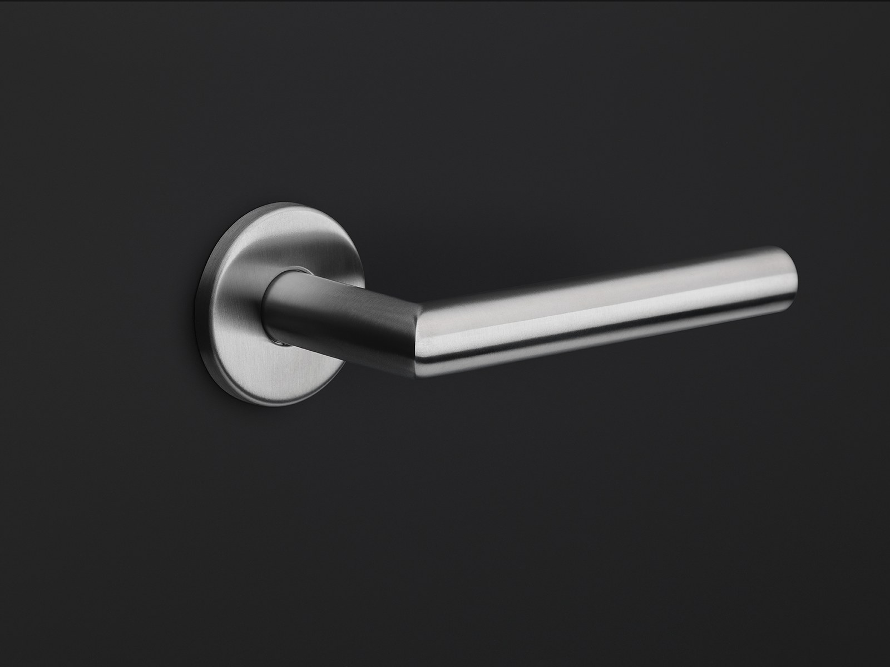

Сдержанный и чистый дизайн для любого бюджета.
| Состав | двери · окна · мебель · аксессуары |
| Материал | нержавеющая сталь |
| Отделки | матовая и полир. сталь, бронза, белый, сатин. чёрный, PVD gunmetal, золото, PVD светлая бронза, PVD шампань |
| Сертификат | часть изделий — EN 1906 класс 3 |